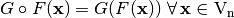
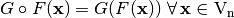

Composition¶
 where .
where .
Library¶
It can be obtained with the following method:
void Comp(VBF& X, VBF& F, VBF& G)
Example 1¶
The following program provides the correlation immunity and balancedness of two Vector Boolean functions given their Truth Tables and calculates the same criteria for their composition.
#include <iostream>
#include <fstream>
#include "VBF.h"
int main(int argc, char *argv[])
{
using namespace VBFNS;
VBF F, G, X;
NTL::mat_GF2 Tf,Tg;
ifstream input1(argv[1]);
if(!input1) {
cerr << "Error opening " << argv[1] << endl;
return 0;
}
input1 >> Tf;
F.puttt(Tf);
input1.close();
ifstream input2(argv[2]);
if(!input2) {
cerr << "Error opening " << argv[2] << endl;
return 0;
}
input2 >> Tg;
G.puttt(Tg);
input2.close();
cout << "Correlation immunity of F: " << CI(F) << endl;
if (Bal(F)) {
cout << "F is a balanced function" << endl;
} else {
cout << "F is a non-balanced function" << endl;
}
cout << endl;
cout << "Correlation immunity of G: " << CI(G) << endl;
if (Bal(G)) {
cout << "G is a balanced function" << endl;
} else {
cout << "G is a non-balanced function" << endl;
}
cout << endl;
Comp(X,F,G);
cout << "Correlation immunity of GoF: " << CI(X) << endl;
if (Bal(X)) {
cout << "GoF is a balanced function" << endl;
} else {
cout << "GoF is a non-balanced function" << endl;
}
return 0;
}
If we use  of CLEFIA
of CLEFIA  cipher (see CLEFIA section in “Analysis of CRYPTEC project cryptographic algorithms”) and NibbleSub Truth Tables as inputs, the output would be the following:
cipher (see CLEFIA section in “Analysis of CRYPTEC project cryptographic algorithms”) and NibbleSub Truth Tables as inputs, the output would be the following:
Correlation immunity of F: 1
F is a balanced function
Correlation immunity of G: 0
G is a balanced function
Correlation immunity of GoF: 1
GoF is a balanced function
Example 2¶
The following program provides the balancedness of two Vector Boolean functions given its polynomial representation in ANF and calculates the balancedness for the its composition.
#include <iostream>
#include <fstream>
#include "VBF.h"
int main(int argc, char *argv[])
{
using namespace VBFNS;
VBF F, G, X;
vec_pol f,g;
ifstream input1(argv[1]);
if(!input1) {
cerr << "Error opening " << argv[1] << endl;
return 0;
}
input1 >> f;
F.putpol(f);
input1.close();
ifstream input2(argv[2]);
if(!input2) {
cerr << "Error opening " << argv[2] << endl;
return 0;
}
input2 >> g;
G.putpol(g);
input2.close();
cout << "The polynomial in ANF of F is ";
cout << endl;
Pol(cout,F);
if (Bal(F)) {
cout << "F is a balanced function" << endl;
} else {
cout << "F is a non-balanced function" << endl;
}
cout << endl;
cout << "The polynomial in ANF of G is ";
cout << endl;
Pol(cout,G);
if (Bal(G)) {
cout << "G is a balanced function" << endl;
} else {
cout << "G is a non-balanced function" << endl;
}
cout << endl;
Comp(X,F,G);
cout << "The polynomial in ANF of the composition of F and G is ";
cout << endl;
Pol(cout,X);
if (Bal(X)) {
cout << "GoF is a balanced function" << endl;
} else {
cout << "GoF is a non-balanced function" << endl;
}
return 0;
}
If we use the Boolean functions of first example described in [GuptaS:05] as inputs, the output would be the following:
The polynomial in ANF of F is
x1+x2+x1x3+x1x2x3
x2+x1x2+x2x3+x1x3+x1x2x3
F is a non-balanced function
The polynomial in ANF of G is
x1+x2
G is a balanced function
The polynomial in ANF of the composition of F and G is
x2x3+x1+x1x2
GoF is a balanced function
If we use the Boolean functions of second example described in [GuptaS:05] as inputs, the output would be the following:
The polynomial in ANF of F is
x3+x1x2+x1x2x3
x2+x3+x1x2+x2x3+x1x2x3
F is a non-balanced function
The polynomial in ANF of G is
x1x2
G is a non-balanced function
The polynomial in ANF of the composition of F and G is
x3
GoF is a balanced function